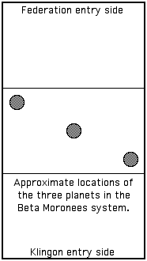
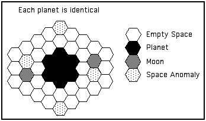

Scenario 08, prepared by David Ternes
Map.
The three planets and their moons are shown on the area chart. Each planet has two moons.
|  |  |
Space Anomalies.
Each planet has four space anomalies around it (a total of 12 anomalies). If a ship enters the hex with a space anomaly, it must immediately halt for the remainder of the current movement phase. Roll a D10 to see what type of space anomaly is present.
| 1-2 | Dimensional Shift Area. Vessel drops out of normal space for 1 turn (3 phases). All locks on the ship are lost and the ship looses any locks. It returns to normal space with its existing energy condition (i.e., as if the lost phases had not occurred). | |
| 3-4 | Power Drain Field. Shields are drained for the remainder of the turn. If a ship starts the turn in the field, its shields come back up only if it moves out of the field in the first movement phase. Any weapons fired out of or into the field have no effect. | |
| 5-6 | Warp Nullification Field. Movement power is drained. The ship will coast the remainder of the turn in a straight line at a rate of two hexes per movement phase. The ship retains its position in the movement order. | |
| 7-8 | Mini Worm Hole. The ship may not move in the next movement phase. At the end of that movement phase, roll a D6. This is the shield direction that movement will occur. The ship will appear with its current facing in the hex D10+4 distant. Roll another D6 for facing using shield directions as the new direction faced. | |
| 9-0 | Alternate Universe Mini Worm Hole. As for 1-2, plus, roll another D10. On a result of 8, 9, or 0, the ship disappears permanently. On a result of 1-7, the ship takes one 5 point hit through each shield. Shields do not stop or reduce the damage. |
Victory Conditions.
The side to win, excluding the possibility of a major military victory, will be the side to get the most scan points. Each space anomaly found counts as 1 scan point. Each space anomaly which was scanned in detail counts as an extra 2 scan points. A force will be assumed to have been successful if it gets at lest 20 points.
If one side warps out, then the opposing force will be allowed to roll to see if it finds any anomalies that it has not yet discovered. Roll a D10 for each undiscovered anomaly. On a result of 1-4, the side gets 3 points. On a result of 5-8, the side gets 1 point. On a result of 9-0, the side gets 0 points.